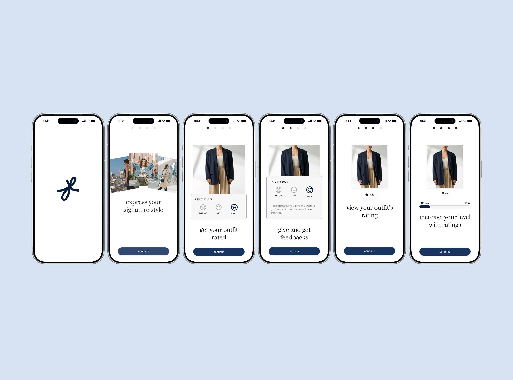
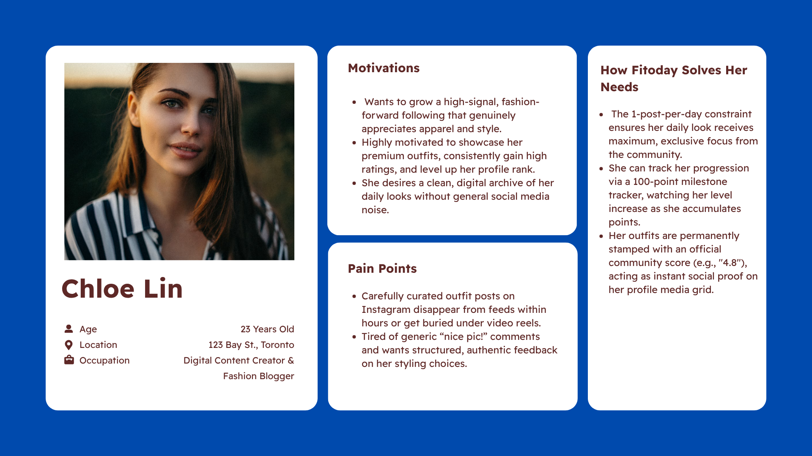
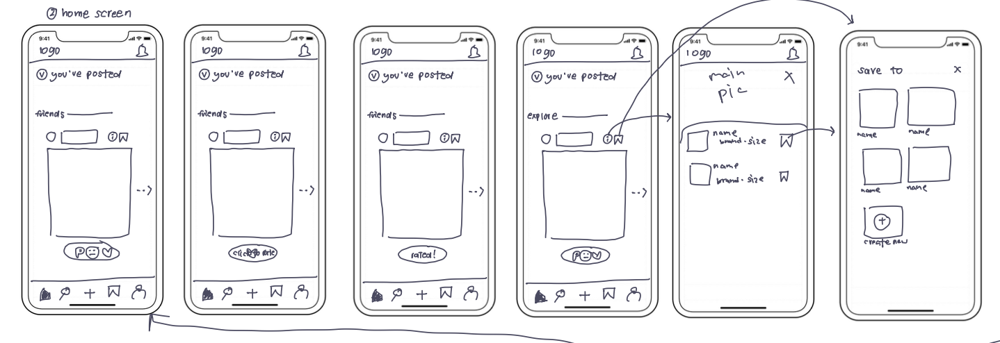
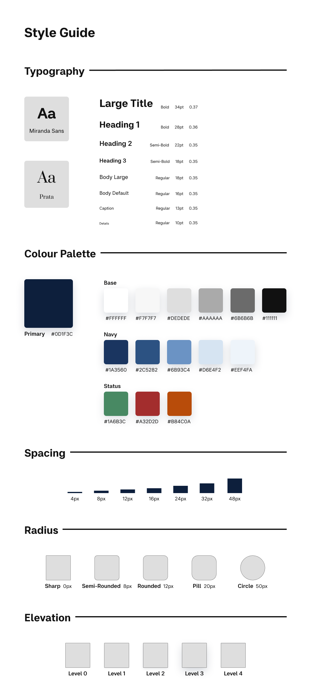
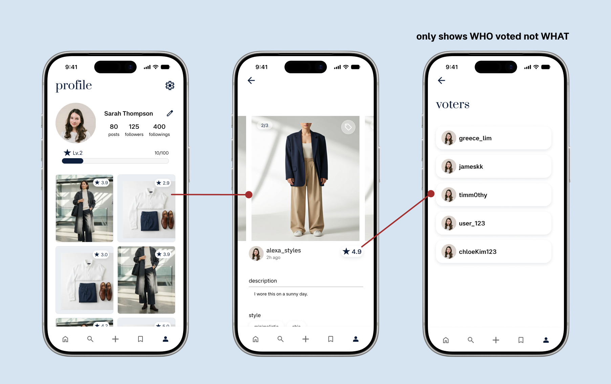
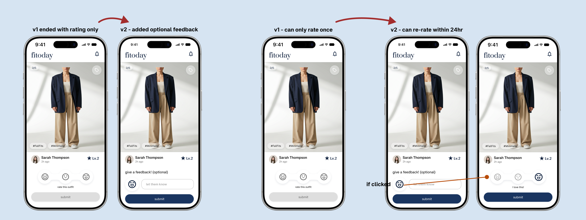

Fitoday
Fitoday is a social fashion app where you post your outfit and get real feedback from people whose taste you trust, not just likes. I introduced a three-option rating (love it / it's okay / let's improve) paired with optional written comments, so responses stay fast to give but still useful to receive.

- Role: Solo. Product Designer, UX Researcher & Full-Stack Developer
- Timeline: 8 to 10 weeks, ongoing
- Platform: iOS (Flutter)
- Stack: Flutter/Dart, Firebase (Auth, Firestore, Cloud Functions)
- Status: Research, PRD, and Figma design complete. Auth and backend security are in place; core Cloud Functions are still in progress.
Scrolling through Instagram, I kept wondering why some outfits looked put together and mine didn't. What I wanted wasn't more inspiration. It was honest feedback I could learn from.
to post an outfit. They were short on a place to actually get feedback on it.
A competitive review and a 12-person survey confirmed the pattern: plenty of places to post, almost nowhere built for honest, constructive feedback.
| Platform | Strength | Where it falls short for fashion |
|---|---|---|
| Large audience | Fashion content buried under unrelated content and algorithmic noise | |
| Inspiration discovery | No way to get personal feedback on your own outfit | |
| TikTok | Discovery, virality | Hard to track personal style progression over time |
| BeReal | Daily authenticity habit | Not fashion-focused at all |
Before opening Figma, I wrote a PRD to turn the research findings into product requirements, so every design decision traced back to evidence.

I sketched rough drafts first to understand the user flow. I focused on the core interactions, then refined the visual design.

One set of parts for every screen
I designed Fitoday's visual system myself in Figma: type, colour, and components. Having it in one place meant the rating, comment, and profile screens all pulled from the same parts, and the Flutter build had a clear reference to match.

Three deliberate constraints carry the product.

I tested with five participants using think-aloud sessions to find where people hesitated or expected something different.
"but I want people to tell me WHERE to improve not just how good it looks"
I assumed a three-option rating would be enough on its own. It wasn't. People wanted to say why, not just what. Five conversations changed three of my original assumptions:
- Added optional comments after ratings, since a quick tap wasn't giving people enough room to actually help.
- Added privacy controls after someone flatly said they didn't want their history visible, a need the original scope hadn't considered at all.
- Allowed vote changes during the rating window after watching someone mis-tap with no way to fix it.

Instead of stopping at the prototype, I'm building the product myself in Flutter and Firebase. Auth and backend security are in place; the remaining Cloud Functions are still in progress.
"Writing the PRD before opening Figma changed how I think about design decisions. Every screen and every constraint, from the one-post-a-day limit to the three-option rating, traces back to a requirement I wrote down before I knew what it would look like. That made trade-offs easier to defend, because I wasn't arguing for a design I liked. I was arguing for a requirement I'd already justified."